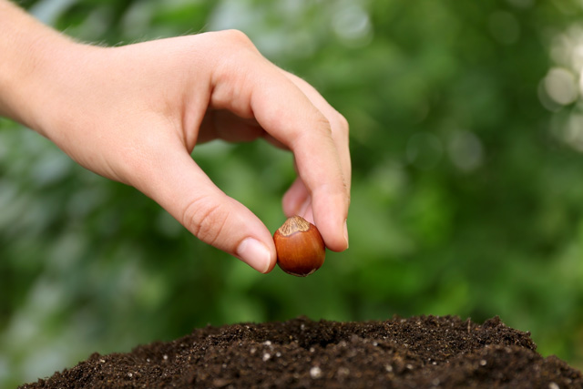
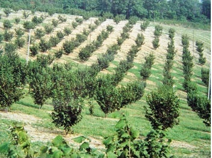
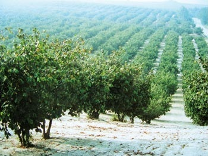

Зростання інтересу до вирощування ліщини, яке ми спостерігаємо в нашій країні останнім часом, можливо, має свою причину в тому, що Комітет сільського господарства ЄС надає спеціальні субсидії людям, які вирощують цю рослину на площі не менше 1 га. Багато садівників шукають інформацію про створення плантацій лісових горіхів, вимоги цієї рослини та її найкращі сорти.
Грунти для плантації ліщини
Всупереч поширеним висновкам про скромні ґрунтові та кліматичні вимоги до ліщини, слід підкреслити, що культивовані сорти цього виду мають потреби, подібні до інших плодових рослин і в гарних умовах, на багатих поживними речовинами ґрунтах, при правильній агротехніці, дають високий вихід горіхів.
Примхливий польський клімат - створює великі ризики для вирощування не лише ліщини. На думку фахівців, для вирощування ліщини придатні райони нашої країни з середньою температурою на протязі усього року, що досягає не менше 8 °С. Однак потрібно підкреслити, що цю інформацію не слід розглядати довільно - як умова, що визначає діапазон культивування цього виду в Польщі. Більшість існуючих плантацій лісових горіхів знаходяться в районах із середньорічними температурами близько 7 °C, в основному в Люблінському регіоні та в Замості. Більш важливим, ніж середня температура року, є те, що в садах ліщини не відбуваються або тривають якомога коротше, періодичні потепління, які трапляються в середині зими, особливо в січні та лютому, після чого повертаються сильні морози. Фундук - це рослина, яка відзначається дуже коротким зимовим відпочинком, що закінчується дуже рано і кілька днів зимового потепління, при температурі на кілька градусів вище 0 °C може призвести до розвитку сережок, чоловічих суцвіть. Рецидив морозу призводить до загибелі трохи більш розвинутих сережок, що може перешкоджати їх подальшому зростанню і вивільненню пилку після закінчення морозу, під час цвітіння ліщини. Суцвіття жіночих квітів ліщини, приховані в бруньках та менш чутливі до морозу, і лише кінчики червоних ниток можуть зазнати пошкоджень, які можуть з'явитися на кінцях бруньок як червона крапка під час зимового потепління. Коли небажана температура відступає, нитки відновлюють зростання, створюючи червону китицю з чорними, знищеними морозом верхівками. Червона, жива тканина видовжених вусиків може, однак, взяти пилок по всій його довжині.
В ідеалі рішенню про створення плантації ліщини в певній місцевості передує візит до регіонального відділення Інституту метеорології та водного господарства, де можна отримати повну інформацію про місцевий мікроклімат. Ви також можете покладатися на свої власні, довгострокові спостереження за погодою в районі, де плантація буде посаджена. Для вирощування ліщини підходять плоскі місцевості або пологі пагорби (фото 1), що не заважають механічному обробітку і догляду за ліщиною. Уникайте південних схилів, де описане вище зимове потепління є більш поширеним явищем. Не варто закладати плантації у впадинах ділянок, біля низин річкових долин і струмків, де може затримуватися холодне повітря. Також несприятливими є відкриті вершини пагорбів, які піддаються сильним холодним вітрам взимку і ранньою весною. Слід підкреслити, що в період глибокого, зимового спокою, ліщина дуже стійка до морозу і витримує температуру нижче -25 °С. Дуже низька температура зими, яка спричинила величезні втрати на плантаціях плодових культур, не мала великого впливу на ліщину, як на сорти з нашої кліматичної зони, так і на сорти з середземноморського клімату. В обох групах сортів у минулому році були зібрані високі врожаї лісових горіхів.
Грунт і плодоношення
Ліщина добре плодоносить на родючих, гумусових ґрунтах. Потрібно віддавати перевагу лесовим, чорноземам, бурим та глинисто-піщаним ґрунтам. Фундук гірше росте на надто важких, вологих і холодних та сухих ґрунтах, піщаних, гравійних, бідних на вміст гумусу і мінералів. Добре, щоб рівень ґрунтових вод був не більше 1,2 м. Фундук вимагає ґрунтів, близьких до нейтральних або нейтральних (рН 6,5-7,1). Перед посадкою рекомендується проводити аналіз ґрунту. Його результати дадуть повну інформацію про кількість поживних речовин і фізичні властивості ділянки, на якій ми будемо садити плантацію. Ми готуємо поле для майбутньої плантації подібно до інших видів плодових рослин. Добре б, щоб у сезон, що передує посадці ліщини, ґрунт має бути доведений до правильного значення вапнуванням. Рекомендується магнієве вапно, що збагачує його цінним магнієм. На більш важких ґрунтах можна використовувати оксид кальцію, а на більш легких - карбонат кальцію. Дози визначаються на основі результатів аналізу ґрунту. Після вапнування, на полі проводиться глибока оранка і залишається ґрунт на зиму в борозні. У наступний вегетаційний період підготовка ґрунту для посадки ліщини може полягати в вирощуванні коренеплодів з попереднім внесенням гною (близько 50 т/га) з додаванням мінеральних добрив або на вирощування бобових рослин для приорання, а також з додаванням мінеральних добрив. Після збору коренеплодів рекомендується оранка або культивування та застосування додаткових доз мінеральних добрив з подальшим боронуванням і щонайменше 3-тижневим відпочинком ґрунту перед посадкою ліщини. На більш ранній термін збирання коренеплодів ми виконуємо глибоку оранку з посівом мінеральних добрив, культивуванням і боронуванням. Після того як ґрунт вляжеться ми починаємо посадку ліщини. У випадку зернобобових культур, як передпосівних, перед оранкою, ми каткуємо рослини в напрямку, паралельному до оранки, відносно неглибоко проходимо дисковою бороною на більш важких ґрунтах і на більшу глибину на більш легких ґрунтах, надаючи додаткові дози мінеральних добрив. Ці дози найкраще визначати на основі результатів аналізу ґрунту. Їх приблизний розмір на гектар становить від 50 кг. до 150 кг. K2O і від 50 кг. до 100 кг. P2O5, залежно від якості ґрунту. Через деякий час ми культивуємо, боронуємо, і приблизно через 3-4 тижні садимо ліщину. У всіх описаних випадках посадка починається відразу після придбання матеріалу з розплідника, який зазвичай припадає на першу половину листопада. Коли ґрунт замерзає або випадає рано сніг, ми садимо ліщину навесні, після того як ґрунт висохне. Якщо бур'яни з'являються під час підготовки ґрунту, ми боремося з ними гербіцидами, що містять гліфосат. У разі стійких бур'янів, які важче викорінити, ці препарати слід застосовувати у більш високих рекомендованих дозах. Проводимо цю обробку до початку періоду цвітіння бур'янів.
Посадка ліщини
Після підготовки поля відзначте місця, де будете саджати фундук. Повна механізація догляду за ліщиною та збирання горіхів обумовлює необхідність планування широко розташованих міжрядь. Звичайна ширина 5 метрів виявляється занадто малою після 8 років культивування, а крайні гілки пошкоджуються використовуваними сільськогосподарськими машинами. Тому рекомендується збільшувати ширину міжряддя до 6-8 м при посадці, наприклад, в Італії (фото 2). У рядах відстані між рослинами менші, зазвичай 4-5 метрів. Також практикується більш висока щільність рослин в рядах, що, однак, тягне за собою необхідність спеціальної обрізки ліщини після декількох років вирощування або вилучення після цього часу кожної другої рослини, щоб запобігти їх взаємному затіненню. Після маркування, викопують ями розміром трохи більше за кореневу системи рослин. Посадкові ями заправляють компостом і садять ліщину. Занадто довга коренева система може бути вкорочена секатором, що полегшить посадку, коріння не завертається. Слід звернути увагу на те, щоб рослини не були посаджені занадто глибоко, оскільки тоді ліщина чітко знижує темпи зростання протягом декількох років після посадки. Кожну ямку можна також заправити невеликою кількістю добре ферментованого перегною, який перед посадкою покривається шаром ґрунту, щоб коріння не входили в безпосередній контакт з ним. Деякі виробники рекомендують, щоб при осінній посадці нагортати невеликий шар землі навколо посадженої рослини, що захищає корінь саджанців від морозу. Навесні ґрунт навколо саджанця потрібно розгорнути та вирівняти. Також, після посадки, надмірно високий саджанець можемо обрізати. Матеріал для посадки - бажано дворічні рослини - повинен походити з хороших, відомих розсадників, які мають відповідні ліцензії на виробництво і продаж садивного рослинного матеріалу. Саджанців невідомого походження слід уникати, оскільки вони можуть бути сіянцями, отриманими на генеративній основі, які не повторюють характеристики материнських рослин. Завдяки перехресному запиленню фундука краще посадити плантацію декількома сортами які будуть запилювати один одного. Ми висаджуємо сорти в послідовні ряди, а у випадку великих плантацій виділяємо два сусідніх рядки для кожного сорту. Термін збирання горіхів в окремих сортах ліщини може змінюватися, тому посадка рядів одного сорту сприятиме механічному збиранню горіхів. Рекомендується вирощувати фундук на одному штамбі (стовбурі), тому що в такій формі легше підтримувати правильну, відкриту для світла форму крони. Рослини також вирощують на 3-5 пагонах. Фундук з загущеною кроною і занадто затіненими сусідніми кущами швидко реагує зниженням врожайності.
Підбір сортів
Підбір сортів Прийняття рішення у цьому питанні ускладнюється відсутністю даних про урожайність сортів у різних регіонах країни. Наведені до цього часу спостереження показують, що врожайність в окремих частинах країни може відрізнятися. До цих пір ми не проводили досліджень по районуванню сортів фундука. Було б добре отримати інформацію з цього питання від виробників, які вирощують ліщину в районі, де ми маємо намір створити плантацію. Сорти ліщини, вирощені в Польщі, які легко доступні в місцевих розсадниках, належать виключно до групи десертних сортів (таблиця), з горіхами середнього або великого розміру. Не доступні або важкодоступні так звані сорти для переробки або промислові - з сферичними і відносно невеликими горіхами, ядра яких 100% піддаються бланшуванню. Горіхи цих сортів використовуються кондитерською промисловістю як сировина для виробництва шоколаду з горіхами, горіховими масами та іншими продуктами. Горіхи десертних сортів доступні на ринку у вигляді цілих горіхів (роздрібні магазини і ринки) і лущених, як правило, після процесу бланшування. Горіхи різних сортів істотно відрізняються за легкістю, з якою оболонка ядра видаляється в процесі бланшування. Найбільш цінними є ті, які бланшуються на 100%. Інші сорти, ядра яких не втрачають плівку в цьому процесі або втрачають її частково, не підходять для продажу в очищеному вигляді, оскільки є менш привабливими. Сорти фундука з такими горіхами можуть бути джерелом цінного масла, що використовується не тільки в харчовій а й у фармацевтичній промисловості, а також у технічних цілях. Слід додати, що горіхи фундука містять 60-70% жиру у вигляді масла, яке отримують шляхом холодного пресування.